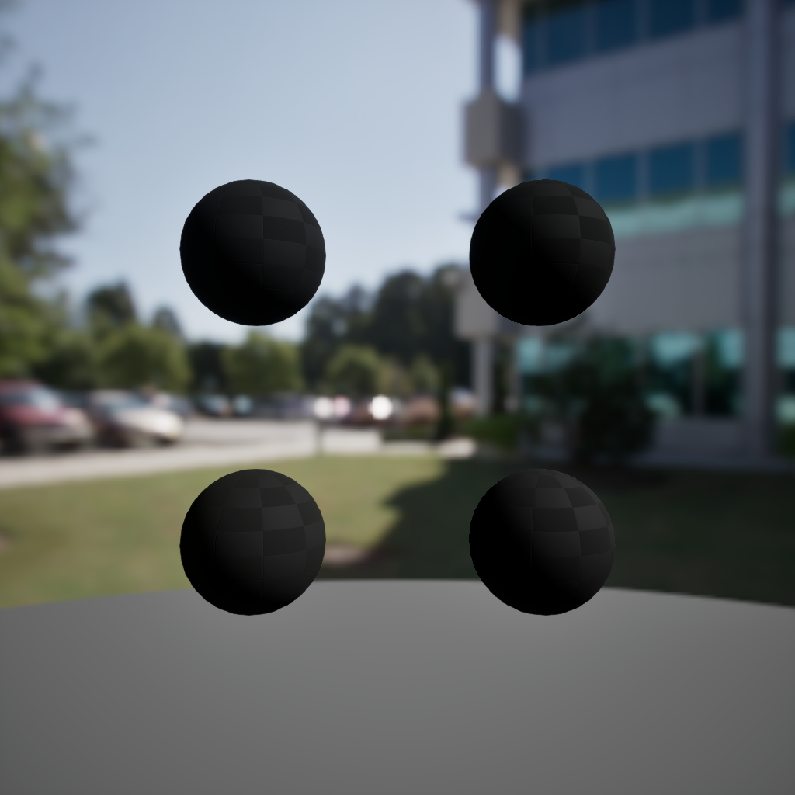
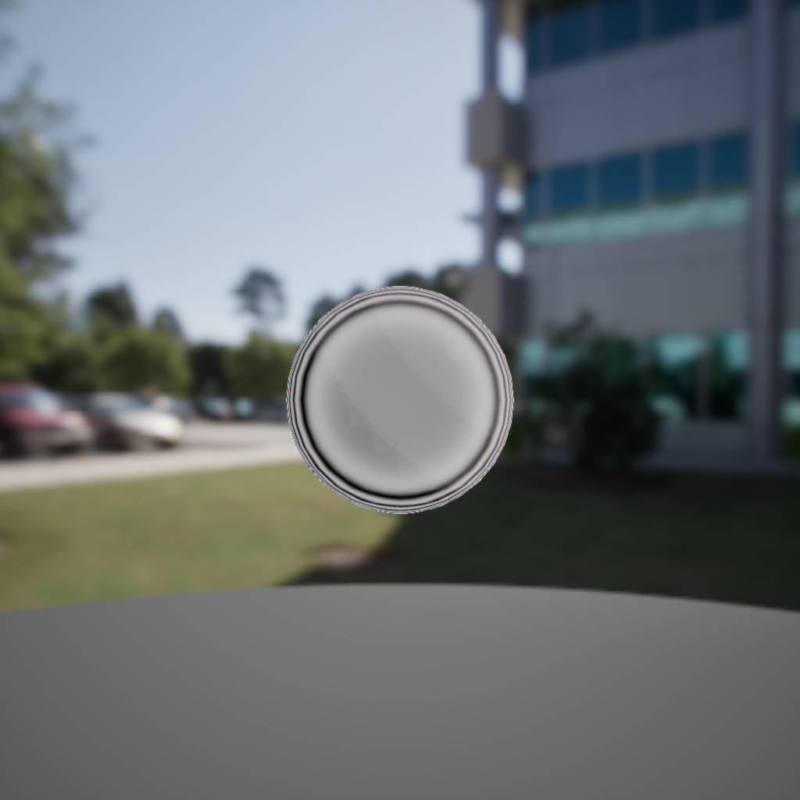
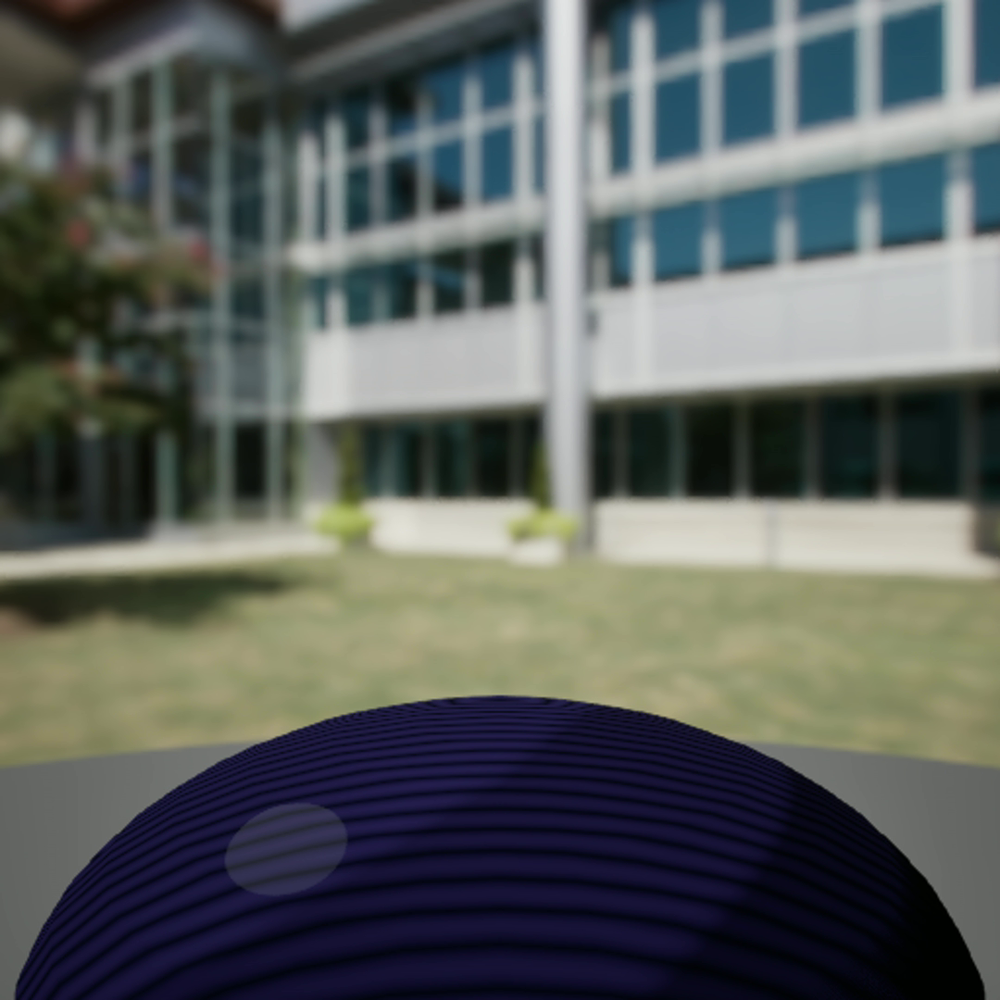
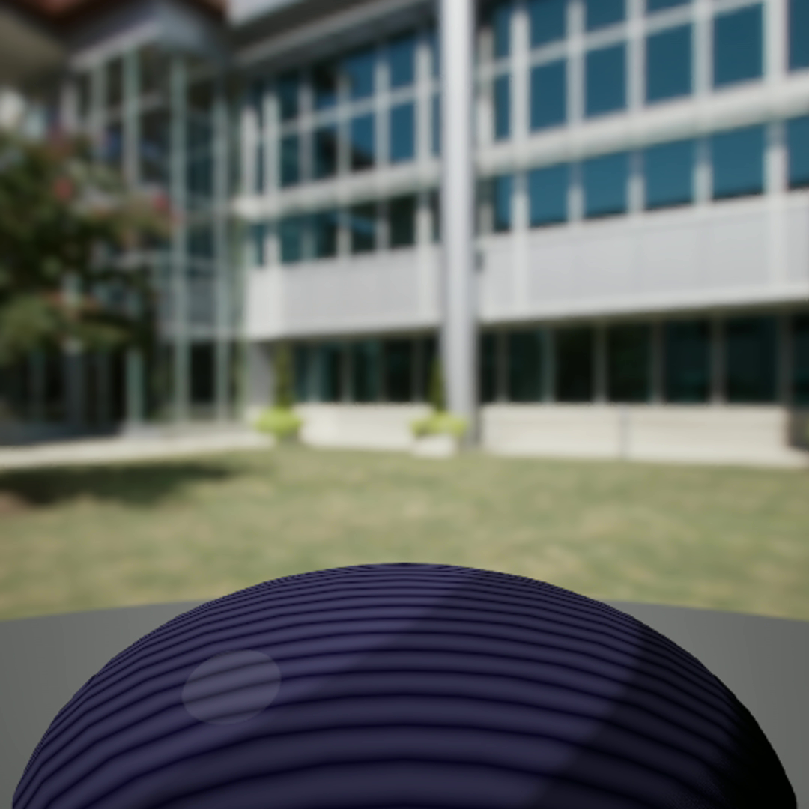
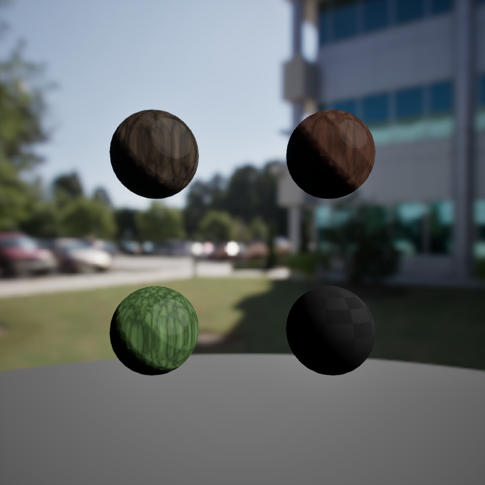
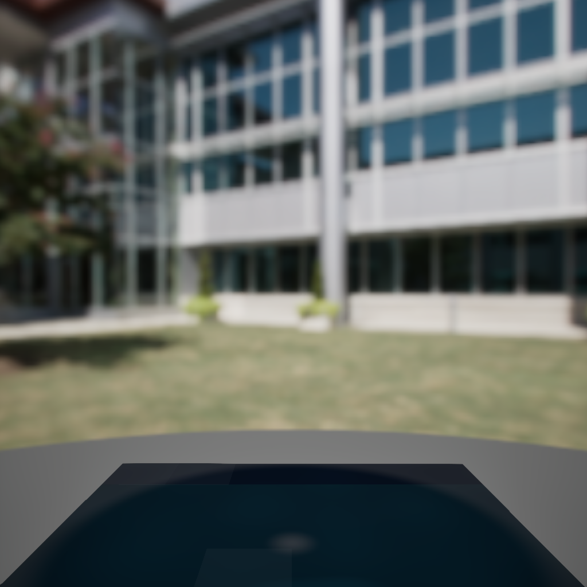
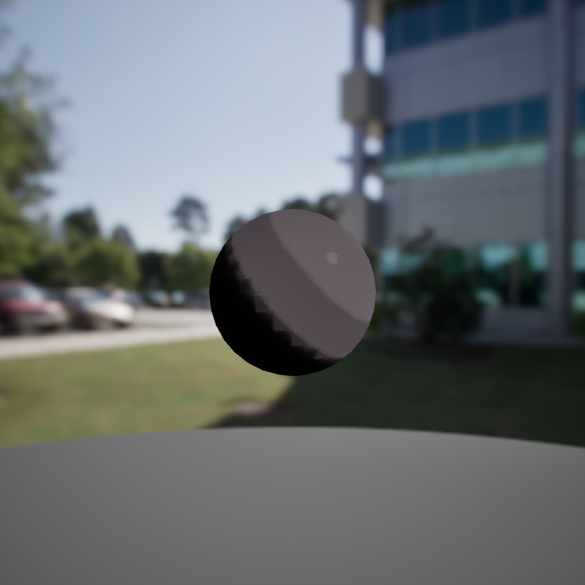
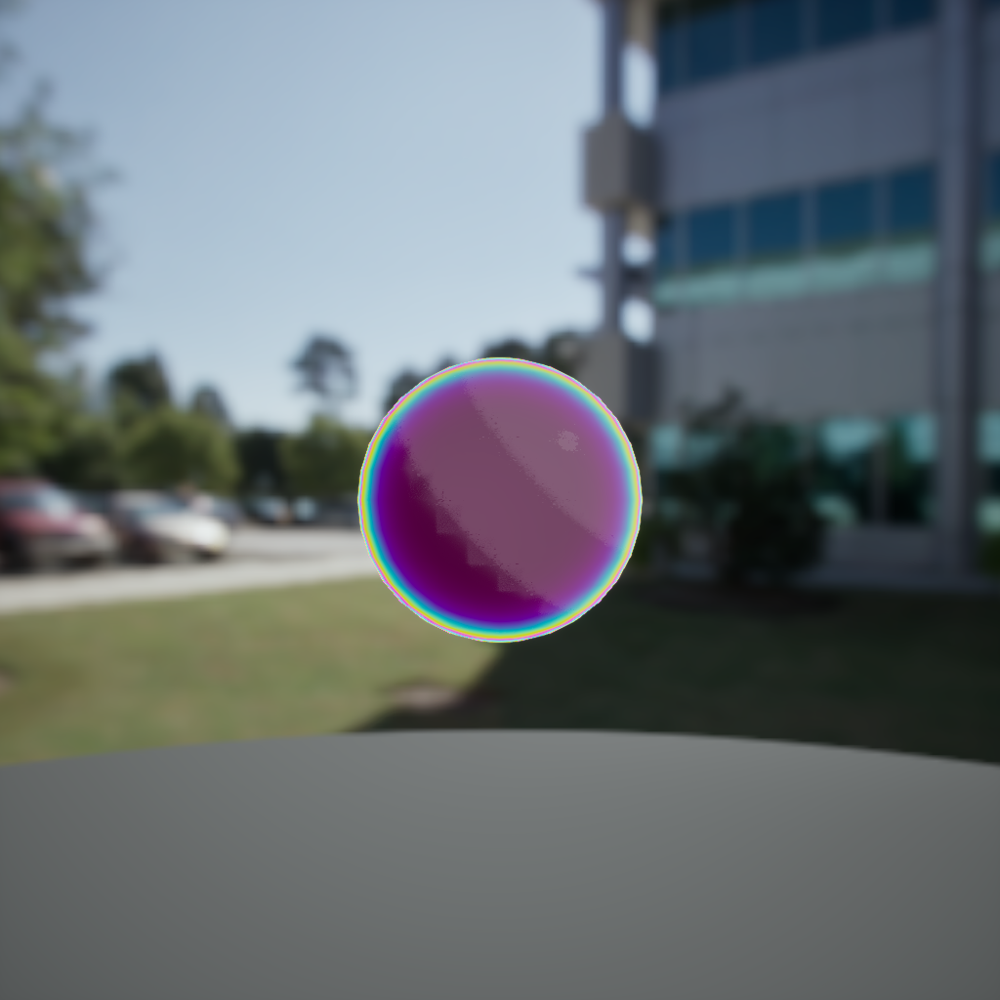

UE5 Substrate Toon · 22 material instances
Materials I actually use in the worlds.
Built on M_Master_Toon_Universal (916 expressions, 11 static switches). Each material instance has a live webm animation loop and material isolate preview. Nikki Hero, Cosmic, SDF, and Celestial families.
Master Material
M_Master_Toon_Universal
The single stylized surface system powering every environment — layer stack, Nikki modulators, and instance scope.
916 ExpressionsSingle master material
11 Static SwitchesToggle features per instance
Substrate Toon BSDFStylized surface response
19 Showcase InstancesFrom NikkiHero to StoneCliff
6 SDF Ornament MIsFiligree, scrollwork, rosette
6 Cosmic MIsNebula, starfield, void, aurora
Nikki Hero Family
Infinity Nikki–aligned surfaces · 5 MIs
NikkiHero GridAll 9 Nikki hero MIs

NikkiHero v5 TriplanarImproved triplanar projection

Iridescence ThinfilmSheen and sparkle masks
Cosmic SDF Family
Space Cathedral + Cosmic Orrery · 6 MIs
Cosmic GridAll 9 cosmic SDF MIs

CelestialNebulaNASA starmap · parallax

VoidDeepDeep space void

StarfieldATwinkling starfield
PurpleNebulaAPurple nebula · animated
BlueNebulaABlue nebula · animated
EclipseHaloEclipse glow · animated
AuroraVeilAurora borealis · animated
SDF Ornament Family
Baroque Grotto + ornamental detail · 6 MIsVoidStarlightSDF void with stars
RosyQuartzRose quartz SDF
Nebula_VeilNebula veil SDF
IvoryScrollworkOrnamental scrollwork
CelestialVinylVinyl disc SDF
Aurora_BandAurora ribbon SDF
Showcase Material Instances
Key signature materials across all environments
Sakura SurfacesSakura material family grid

Layered WaterWave displacement · toon water

Volumetric InkStylized ink wash

Dream RimContact rim + atmospheric fade